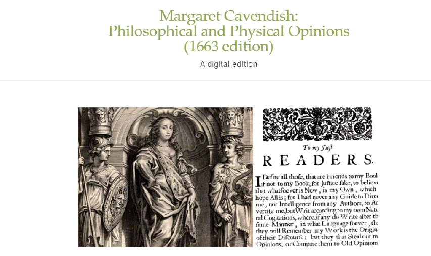

About Minimal Computing
Introduction and definitions
The first definitions of minimal computing were formulated within the Global Outlook::Digital Humanities (GO::DH) working group around 2014–2015. The minimal computing working group sought to create spaces for exchange among researchers from geographic and linguistic contexts marginalized in the dominant Digital Humanities conversation. In this context, minimal computing is presented as a way to counteract structural inequalities: it is about designing and maintaining projects that can operate under conditions of low connectivity, limited hardware, or scarce economic resources, thus ensuring that digital research does not depend exclusively on privileged infrastructure environments.
On the working group website, minimal computing is defined as: “computing done under some set of significant constraints of hardware, software, education, network capacity, power, or other factors.” To this initial definition, Alex Gil (2015) adds that minimal computing “is also the computing we choose to do for the sake of ethics, sustainability, and access.”
The first minimal computing projects were created following these principles and pursued absolute simplicity, prioritizing the preservation and transmission of the text. All of them used static sites technology; and most of them were developed using Markdown as a markup language, which implies minimal requirements not only in terms of infrastructure but also in terms of learning curve.
The interest in minimalist approaches to technology lie partly in the early development of computing in the 20th century led by figures such as Alan Turing. The Turing machine is conceptually minimal: a very small set of operations that can, in theory, compute anything. In the 21st century we can list some important milestones that have helped building the minimal computing approaches we recognize nowadays:
- In 2009 Hartmut Obendorf published Minimalism: Designing Simplicity which influenced subsequent research and development
- In the same year the Raspberry Pi Foundation was launched and in 2012 the first commercial Raspberry Pi computer, the Model B, went on sale for $35
- In 2014 the Global Outlook::Digital Humanities Minimal Computing Working Group (DHminimal computingWG) was set up, led by Jentery Sayers and John Simpson, which formalised minimal computing as a methodological framework in the Digital Humanities (DH)
- In 2015 Alex Gil published a ‘thought piece’ on the DHminimal computingWG website entitled ‘The User, the Learner and the Machines we make’ which posed the question “What do we need?” as an approach to minimal computing
- In 2016 the first Minimal Computing in the Digital Humanities workshop was held at the DH 2016 Conference
- In 2017 Sayers taught a graduate seminar on minimal computing at the University of Victoria, Canada, drawing on Obendorf’s 2009 work
- In 2022 the Digital Humanities Quarterly published a special edition on minimal computing, drawing together much of the recent work in the field – almost all of which was done in North America -- in a collection of five essays and nine case studies
In recent years there is a stronger link between minimal computing and the climate justice movement, dedicated to minimising the environmental impact of computing, specifically its carbon footprint. This is evidenced by the Digital Humanities Climate Coalition (DHCC), an organization that focuses on understanding and minimising the environmental impact of DH research. In response to the ongoing climate emergency, and considering its wider climate justice implications it aims to: “develop a clearer picture of the resource implications of digital humanities research; create resources that help researchers to make informed decisions about the impact of their work; support our institutions to adapt the services, processes, policies on which our research depends; influence funders and other key players to ensure climate responsibility is a key consideration in project planning. In 2022, the DHCC published ‘A Researcher Guide to Writing a Climate Justice-Oriented Data Management Plan’ and the Digital Humanities Climate Coalition Toolkit, which collects resources to support researchers in trying to lower their carbon footprint and resource use.” The work of the Digital Humanities Climate Coalition is related to the actions of the Green Software Foundation (https://greensoftware.foundation/).This foundation has developed a directory that aims to build “a trusted ecosystem of tools, libraries, and resources that promote sustainable software development practices”.
A note on software and hardware
Minimal computing itself doesn’t prescribe open source, but its values (access, equity, sustainability, simplicity) naturally lead to the adoption of open-source hardware and software. Minimal computing emphasizes working under constraints (limited budgets, limited hardware, limited connectivity). In consequence, open-source tools align with this because they are usually free or low-cost, run on older or low-power machines, don’t require paid licenses or corporate infrastructures.
Hardware
There are three main strands to the hardware dimension: low-cost basic computers; remanufactured and refurbished PCs and laptops; and software designed to run on mobile ’phones. In terms of low-cost, basic computers probably the most well-known example is the Raspberry Pi. Prototypes were developed from 2006 and the first commercial machines went on sale in 2012. They were designed in Cambridge and have sold over 60 million units worldwide). They are currently on their fifth generation. Originally designed to help schoolchildren discover computing and programming at a low cost, the Pi is now also used in business and is even in use on the International Space Station.
There is a growing market for refurbished computers and there are companies such as the Portsmouth-based Circular Computing which are dedicated to remanufacturing and refurbishing laptops to give them an extended life. According to the company more than 160,000 laptops are disposed of in Europe every day, 70% of which could be reused, and there is a huge e-waste problem.
Mobile ’phones are ubiquitous on the planet and in parts of the Global South they account for far more internet use than PCs or laptops. According to Chris Diaz of Northwestern University, “More than half of all global internet traffic is generated from a mobile device. In African countries, mobile internet traffic accounts for two-thirds of all web page visits” (‘Minimal Computing with Progressive Web Apps’, DHQ, 16, 2).
So when designing minimal computing websites it makes sense to make them mobile-friendly, and in fact with some minimal computing projects the communities being helped actively request that the apps and websites be mobile-compatible.
Software
According to the opensource.com website open-source software is defined as “software with source code that anyone can inspect, modify, and enhance.” But open-source software embodies more than just the free distribution of programs and their source code: “Open source projects, products, or initiatives embrace and celebrate principles of open exchange, collaborative participation, rapid prototyping, transparency, meritocracy, and community-oriented development”. In 1984 Richard Stallman, credited with founding the Free Software movement, started work on the GNU (“GNU’s Not Unix”) Project which was designed to produce a free operating system, and in 1985 the Free Software Foundation was formed to support its development. In the early 1990s the GNU Project merged with Linux. While it has been around since 1991, GNU/Linux’s global market share is still only 4%, compared to Windows’ 70% and Mac’s 13.5%, despite it being highly Windows-compatible.
However, the open-source movement is not confined to Linux. In 2004 the open-source browser Mozilla Firefox was launched and within a year it had been downloaded 100m million times and is still very popular.
According to research reports published by OpenUK, a not-for-profit company founded in 2018 to support open technology within the UK, the UK leads the world in open source software. In addition to operating systems and internet browsers, the OS movement has developed programs for building static websites such as Jekyll and Wax.
Some minimal computing projects
Early minimal computing projects used the Ed framework to do digital editions. A good example is Alex Gil’s Aimé Cesaire and the Broken record:

Another good example of the use of the Ed framework for digital editions is Margaret Cavendish Philosophical and Physical Opinions (1663 edition), the final result of a 70+ participant transcribe-a-thon that happened in the Fall of 2019 at the University of Kansas:

However, more complex projects using static site technologies were the ones developed by the xpmethod / Group for Experimental Methods in Humanistic Research group at Columbia University). Torn apart/Separados is a good example:

Reflections
As we move towards the second quarter of the twenty-first century, it must be recognised that the minimal computing community is still very small and is fighting against the almost wholesale pursuit of ever more powerful and resource-hungry technology in the form of Artificial Intelligence and supercomputing.
An overview of trends in computing in the UK shows quite clearly that the government, the big tech companies and many of the leading universities are united in their attempts to promote AI, including supercomputing, in all its forms as “the future”. For example, the government’s most recent Policy Paper on computing in the UK, UK Compute Roadmap, published in July 2025, states in its Executive summary:
The government has committed up to £2 billion between now and 2030 to build a modern public compute ecosystem, building on the delivery of 2 new AI supercomputers that form the first phase of the AI Research Resource. We have already started the process to identify and deliver AI Growth Zones across the UK, building on the £44 billion of private sector investment in AI Data Centres over the last 12 months. We are also addressing the energy needs of AI through the AI Energy Council and committing to a new generation of advanced nuclear power projects.
The major internet browsers now use AI to head their search results and encourage users to take advantage of their AI chatbots such as Microsoft’s Copilot and Google’s Gemini, and ChatGPT has seen phenomenal growth in user numbers since its inception in November 2022, now seeing 200 million regular users.
Any discussion of minimal computing must be seen in the context of the undeniable dominance of the Anglophone world – particularly the US and the UK – in the fields of digital scholarship and programming. Needless to say, in the Global North there is a greater wealth of resources for computing-related projects in terms of financing, technical expertise and the sheer quantity of computing hardware available, so that the decision to adopt a minimal approach to a project is made as a matter of choice, whereas in the South such a decision is often made out of necessity and represents an imaginative and principled response to a lack of resources. For instance, while there are plentiful references to the DH and some 10 universities in the UK with dedicated units or departments, there is little or no mention of minimal computing in their public face, and in fact these universities go out of their way to trumpet the new tools and possibilities offered by DH technology, at least some of which run directly counter to the principles of minimal computing, involving as they often do expensive and resource-hungry hardware and software.
Minimal computing must therefore be seen as almost a niche community within the DH community. In practical terms the major foci of interest and publication/dissemination of minimal computing projects and principles in the UK are confined to a handful of universities such as Edinburgh and London and the DHCC.
There are, however, some signs that minimal computing is gaining some traction and may even become more mainstream within a few years. These include the increasing use of open-source software; the championing of minimal computing and its environmental credentials within the powerful climate justice movement; the importance of sustainability and preservation of DH projects (like the Endings Project); the fact that as university finances are squeezed ever more the attractiveness of minimal computing as an approach to computing projects in the humanities, could well increase.
Lastly, it is easy to characterise minimal computing as a one-size-fits-all approach, espousing a universally accepted set of principles with which few would disagree, but this would be a mistake. In his essay in the DHQ 2022 special issue on minimal computing, ‘Ensuring Minimal Computing Serves Maximal Connection’, Grant Wythoff argues that ‘while the tools currently associated with minimal computing are more sustainable, they can be less equitable in terms of participation (considering the steep learning curve of starting from scratch) and that ‘Values guiding the theory and practice of minimal computing include access, participation, sustainability, stewardship, and equity. When placed alongside each other — as we’ve seen — these values often produce rich contradictions that can be difficult to appreciate if particular tools elevate some values at the expense of others.’ In other words, the question of the values and principles underlying any minimal computing project and the choices which flow from them need careful and honest consideration.